22 molécules10 à dessiner11 concepts7 questions du prof
Une vingtaine de produits que tu connais presque tous : savoir les classer, et distinguer stérilisation, désinfection (objets, surfaces) et antisepsie (tissus vivants).
gras souligné = comprendrebleu = DCI + nom commercial + classebleu gras souligné = dessinerrouge = très important
22 molécules (10 à dessiner) · afficher :
Antimalariques, anthelminthiques, antiseptiques intestinaux, désinfectants et antiseptiques de contact11 concepts · 22 molécules (10 à dessiner) · p. 148-175
Concepts à comprendre (11)
Désinfectant vs antiseptique de contact
Un désinfectant tue ou inactive les micro-organismes sur des surfaces inertes (matériel médical, sols, murs, poignées…). Un antiseptique de contact s'utilise sur la peau ou les muqueuses et empêche la multiplication des germes pathogènes. « Anti-bactérien » ou « biocide » est un terme commercial qui ne suit pas forcément les spécifications médicales d'un désinfectant.
Peut-on utiliser n'importe quel désinfectant de surface sur une plaie ?
Non : le désinfectant est destiné aux surfaces inertes ; sur la peau/muqueuses, on utilise un antiseptique.
Spectre des antiseptiques et usage prolongé
Un antiseptique à spectre étroit agit sur peu de germes. Comme il peut déséquilibrer les flores cutanées, buccales et vaginales, on préfère un antiseptique à spectre large en usage prolongé (contrairement aux antibiotiques). Un spectre étroit (ex. hexamidine) risque de favoriser les germes non touchés, comme les champignons (mycose buccale). Une plaie souillée doit toujours être soigneusement lavée avant tout traitement.
Pourquoi préférer un spectre large pour un antiseptique utilisé longtemps, alors que c'est l'inverse pour un antibiotique ?
Parce qu'un antiseptique à spectre étroit laisse proliférer les germes qu'il ne touche pas (p. ex. champignons → mycose).
Alcool, éthanol et alcool dénaturé
Dans la Pharmacopée européenne, l'éthanol à 94° est désigné « alcool » et l'éthanol absolu « éthanol ». L'alcool dénaturé est de l'éthanol additionné d'une autre substance (p. ex. diéthyléther) pour le rendre impropre à la consommation. La fermentation des hexoses s'arrête à 10° d'alcool ; on distille ensuite.
Pourquoi dénaturer l'alcool ?
Pour le rendre impropre à la consommation.
Acide borique en paillettes et eau boriquée
En paillettes dans les chaussettes, l'acide borique neutralise les bactéries responsables de la fermentation odorante de la transpiration (associé au talc mentholé qui diminue les frottements). L'eau boriquée (3,5 g/100 ml) sert à nettoyer les yeux.
Pourquoi l'acide borique diminue-t-il l'odeur des pieds ?
Parce que son effet antiseptique neutralise les bactéries qui fermentent la transpiration.
Eau oxygénée : % et volumes, perhydrol
Une eau oxygénée à N volumes libère N litres d'O2 par litre décomposé par dismutation. Le perhydrol (30 %) est à 100 volumes. Antiseptique puissant à 3 % (10 volumes) ; 5-6 % (20 volumes) pour décolorer les cheveux. Toujours diluer le perhydrol avant de le vendre en vrac. Le nettoyage des plaies doit être prompt car elle endommage les nouvelles cellules ; réputée efficace contre le tétanos (bactérie anaérobie).
Pourquoi l'eau oxygénée serait-elle efficace contre le bacille tétanique ?
Parce que c'est une bactérie essentiellement anaérobie, sensible à l'oxygène libéré.
Désinfection des lentilles et catalase
Les lentilles se nettoient chaque jour (dépôts de graisses et protéines, substrats pour micro-organismes) avec 1 à 5 % d'eau oxygénée stabilisée par 0,1 % d'EDTA. Dans OXYSEPT 1STEP®, un comprimé de catalase (enzyme de dismutation 2 H2O2 → O2 + 2 H2O) libère progressivement l'enzyme et détruit complètement le peroxyde après la désinfection.
Quel est le rôle des comprimés de neutralisation ?
Détruire le reste d'eau oxygénée (catalase), car tout contact avec l'œil provoquerait une grave irritation.
Peroxydes et blanchiment dentaire
Le peroxyde d'hydrogène et le peroxyde de carbamide (urée) blanchissent les dents en réagissant avec les molécules responsables des taches. Vente libre seulement si ≤ 0,1 % de H2O2 ; de 0,1 à 6 % seulement avec approbation d'un dentiste.
Pourquoi limiter la concentration en vente libre ?
Parce que plus il y a de peroxyde, plus l'effet (et le risque) est grand : au-delà de 0,1 % ce n'est pas assez sûr sans contrôle du dentiste.
Eau de Javel et eau de Dakin
L'eau de Javel est une solution d'hypochlorite potassique ou sodique (saturation à froid de KOH/NaOH par Cl2). L'eau de Dakin (DAKINCOOPER STABILISE®) est une solution d'hypochlorite sodique à 0,5 % (p/v).
Pourquoi la chloramine T « remplace avantageusement » l'hypochlorite ?
Parce qu'elle libère le chlore actif plus lentement et est plus stable.
Hexamidine, propamidine, pentamidine
Ces diamidines diffèrent par le nombre de groupements méthylènes entre les deux O : hexamidine 6, propamidine 3, pentamidine 5. L'hexamidine est présentée en iséthionate (acide β-hydroxyéthanesulfonique).
Comment retrouver le nombre de CH2 de chaque amidine ?
Par le préfixe : HEXA = 6, PENTA = 5, PROPA = 3.
Spermicides (benzalkonium, nonoxinol-9)
Le chlorure de benzalkonium (surfactif cationique) inactive les spermatozoïdes ; le nonoxinol-9 est un spermicide surfactif non ionique. Ovules : 10 min avant le rapport, 4 h d'action ; crèmes : immédiates, 10 h ; tampons/éponges : immédiats, 24-36 h. Ils ne suppriment pas totalement le risque de grossesse : à réserver aux contre-indications des autres moyens ou à un usage épisodique.
Pourquoi un ovule doit-il être placé 10 minutes avant le rapport ?
Pour lui laisser le temps de fondre et de se répartir, contrairement aux crèmes dont l'efficacité est immédiate.
Les antiseptiques usuels (tableau récapitulatif)
Alcools : dénaturation des protéines ; aldéhydes : alkylation ; composés borés : effet faible bactériostatique ; peroxydes : radicaux libres oxydants ; chlorés : chlore actif ; chlorhexidine/hexamidine/hexétidine : altération de la membrane ; halogénophénols et ammoniums quaternaires : membrane ; mercuriels : liaison aux groupes SH ; éosine : asséchant, précipite les protéines ; argent : ions Ag+. Les antiseptiques peuvent être irritants pour la peau et les muqueuses.
Pourquoi laver une plaie souillée avant d'appliquer un antiseptique ?
Parce que les impuretés portent des germes et détournent vers elles l'action du système immunitaire (et de l'antiseptique).
Alcools 1 molécule · 1 à dessiner
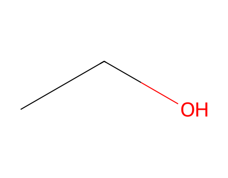
Éthanolà dessiner
pas de nom commercial au cours
Alcools
Noyau : C2H5OH
Mécanisme : Dénaturation des protéines et solubilisation des lipides membranaires (tableau p.175).
Indications : Antisepsie de la peau avant geste invasif (p.175), Désinfection des mains (p.175), Petites plaies, en l'absence de tissus profonds (p.175)
Structure-activité
Obtenu par fermentation (levures) des hexoses (arrêt à 10°) puis distillation : C6H12O6 → 2 C2H5OH + 2 CO2 ; aussi par hydratation de l'éthylène (p.164). Ph. Eur. : l'éthanol à 94° = « alcool », l'éthanol absolu = « éthanol » ; alcool dénaturé = additionné p. ex. de diéthyléther pour le rendre impropre à la consommation (p.165).
Aldéhydes 1 molécule · 1 à dessiner
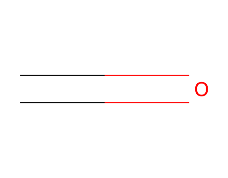
Formaldéhydeà dessiner
pas de nom commercial au cours
Aldéhydes
Noyau : H–CO–H
Mécanisme : Alkylation des protéines et des acides nucléiques (effet microbicide large) (tableau p.175).
Indications : Désinfection de matériel, de surfaces (p.175)
Structure-activité
Gaz obtenu par oxydation catalytique du méthanol ; la solution aqueuse à 35 % (formol) se polymérise aisément en poudre blanche (paraformaldéhyde) (p.165).
Mécanisme : Perturbation du métabolisme microbien : effet antiseptique faible, surtout bactériostatique (tableau p.175).
Indications : En paillettes dans les chaussettes (avec talc mentholé) : neutralise les bactéries de la fermentation odorante de la transpiration (p.165), Eau boriquée 3,5 % : nettoyage des yeux (usage humain et vétérinaire) (p.165), Décongestionnant ophtalmique (in BORADRINE®) ; aphtes / affections buccales (in BOROSTYROL®) (p.165)
Structure-activité
Poudre blanche, parfois en paillettes nacrées (p.165).
structure non représentée
Boraxà dessiner
pas de nom commercial au cours
Composés borés
Noyau : Na2B4O7·10 H2O
Mécanisme : Antiseptique relativement faible, comme l'acide borique (p.165).
Structure-activité
Sel sodique décahydraté ; très soluble dans l'eau chaude (p.165).
Dérivés du peroxyde 2 molécules · 2 à dessiner
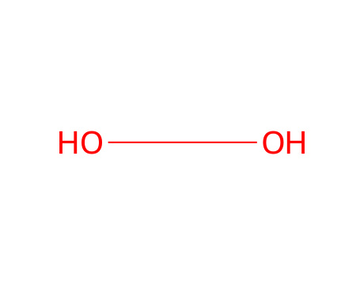
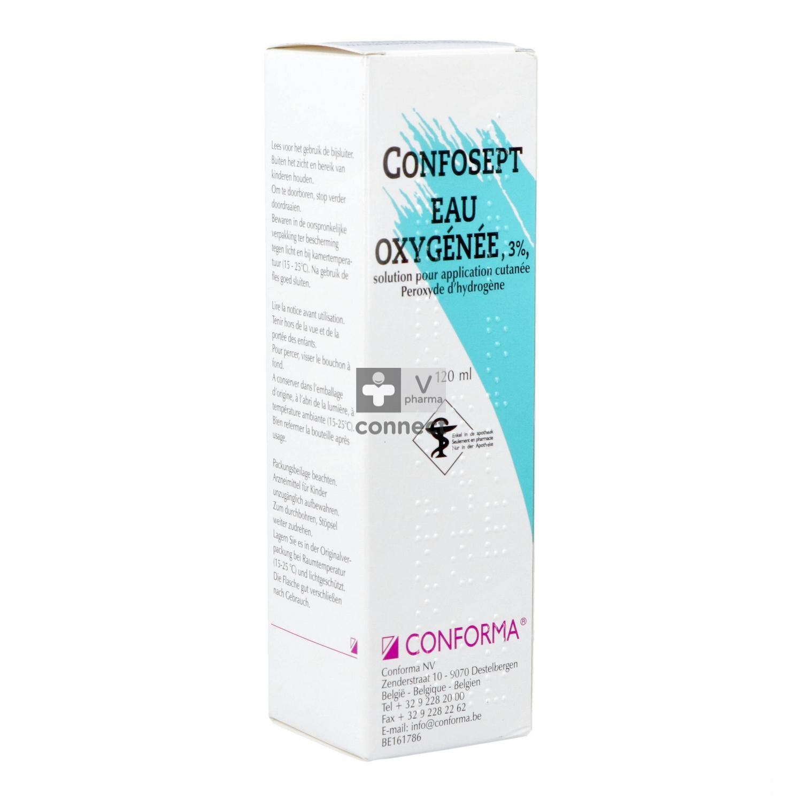
CONFOSEPT EAU OXYGENEE®
Peroxyde d'hydrogèneà dessiner
CONFOSEPT EAU OXYGENEE®, OXYSEPT 1STEP®
Dérivés du peroxyde
Noyau : HO–OH
Mécanisme : Libération de radicaux libres (O•) → oxydation des constituants microbiens (tableau p.175).
Indications : Antiseptique des plaies (solution à 3 % = 10 volumes) (p.166), Désinfection des lentilles de contact (1 à 5 %, stabilisée par EDTA 0,1 %) (p.166), Décoloration des cheveux ou des poils (5-6 % = 20 volumes) (p.166), Blanchiment dentaire (p.167)
Structure-activité
Liquide incolore, sirupeux, peu stable, se décompose avec dégagement d'oxygène ; stabilisé par 0,01 % de phénacétine. Explosif (ne pas secouer trop fort) et oxydant puissant (blanchit peau, cheveux, poils, papier, textile) (p.165). Eau oxygénée à N volumes : 1 litre libère N litres d'O2 par dismutation (p.166).
Mécanisme : Poudre blanche soluble qui dégage du Cl2 par addition d'acide ; libération lente de chlore actif (p.168, p.175).
Indications : Désinfection des eaux de piscine ou de source naturelle avant consommation (comprimés) (p.168), Désinfection de surfaces et de matériel (p.175)
Structure-activité
Préparée par sulfonation du toluène (HSO3Cl) → chlorure de p-toluènesulfonyle → sulfonamide (NH4OH) → N-chloration (p.168-169). SMILES donné sous forme acide (N–H) ; utilisée en sel sodique.
Biguanides et apparentés 2 molécules
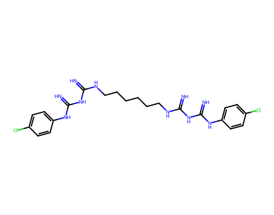
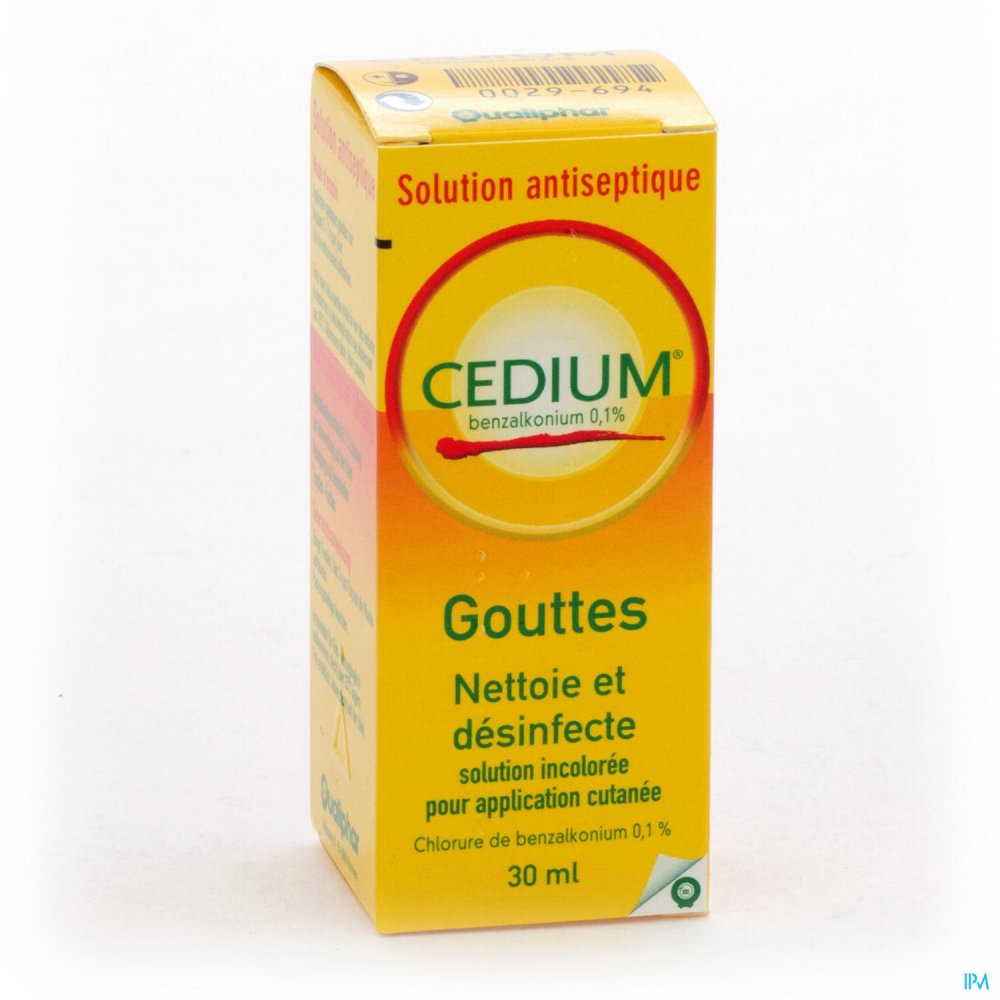
CEDIUM®
Chlorhexidineà reconnaître
CEDIUM®, HIBIDIL®, HIBISCRUB®, MEDICA®
Biguanides et apparentés
Noyau : Bis-biguanide : 2 × (4-chlorophényl-biguanide) reliés par (CH2)6
Mécanisme : Altération de la membrane cytoplasmique (augmentation de la perméabilité, fuite des constituants) (tableau p.175).
Produit basique utilisé sous forme de sels hydrosolubles (mono-, digluconate, dichlorhydrate) (p.169). Motif biguanide 4-chlorophényle comme le proguanil.
Noyau : Bis(4-amidinophénoxy)hexane : 2 benzamidines reliées par –O–(CH2)6–O–
Mécanisme : Atteinte de la membrane cytoplasmique ; spectre plus étroit (tableau p.175).
Indications : Désinfectant en usage externe (HEXOMEDINE®) (p.169), Collutoire (in COLLUDOL®) (p.169), Collyre (DESMOMEDINE®) (p.169), Antisepsie vaginale (p.175)
Structure-activité
Six CH2 entre les deux O ; la propamidine et la pentamidine en ont respectivement 3 et 5 (p.169). Présentée en sel de l'acide iséthionique (β-hydroxyéthanesulfonique HOH2C–CH2–SO3H).
Mécanisme : Altération de la membrane cytoplasmique (tableau p.175).
Indications : Antisepsie buccale : affections de la bouche et du pharynx (bain de bouche) (p.170, p.175)
Structure-activité
Cycle saturé à 2 N (1,3) portant deux chaînes 2-éthylhexyle et, en 5, un CH3 et un NH2. Liquide incolore, insoluble dans l'eau, soluble dans l'alcool et les solvants organiques (p.170).
HEXTRIL® = HEXéTIdine, le bain de bouche aux 2 « éthylhexyles ».
Halogénophénols 2 molécules · 1 à dessiner
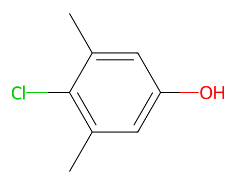
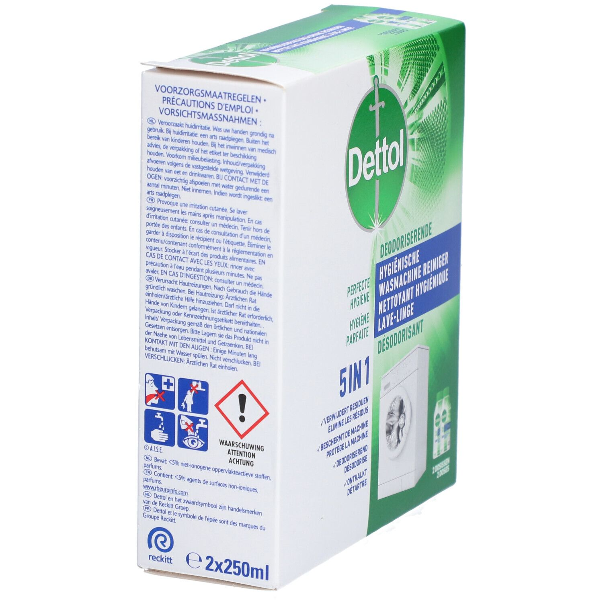
DETTOL®
Chloroxylénolà dessiner
DETTOL®
Halogénophénols
Noyau : Phénol : OH en 1, CH3 en 3 et 5, Cl en 4
Mécanisme : Perturbation de la membrane cytoplasmique et dénaturation des protéines (tableau p.175).
Obtenu par chloration du xylénol ; solide cristallin peu soluble dans l'eau (précipite par ajout d'eau) et les solvants organiques, soluble dans les alcalis (p.170).
DETTOL® = 1 Cl + 2 CH3 sur le phénol (para-chloro-méta-xylénol).
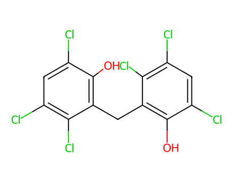
Hexachlorophèneà reconnaître
pas de nom commercial au cours
Halogénophénols
Noyau : Deux trichlorophénols reliés par un CH2 (2,2'-méthylènebis(3,4,6-trichlorophénol))
Structure-activité
Obtenu par action du formol sur le trichlorophénol correspondant (d'où le pont CH2) ; mêmes solubilités que le chloroxylénol (p.170).
Ammoniums quaternaires 3 molécules · 1 à dessiner
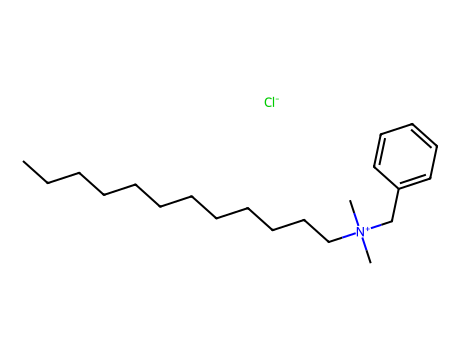
Chlorure de benzalkoniumà dessiner
CEDIUM BENZALKONIUM®
Ammoniums quaternaires — Tensioactif cationique
Noyau : Benzyl-diméthyl-alkylammonium chlorure, alkyle = (CH2)n–CH3 avec n = 7-17
Mécanisme : Interaction avec les phospholipides membranaires → altération de la perméabilité (tableau p.175) ; spermicide surfactif cationique qui inactive les spermatozoïdes (p.172).
Indications : Antisepsie cutanée (lésions superficielles) (p.175), Conservateur dans des collyres / antisepsie oculaire (p.171, p.175), Désinfection de surfaces (p.175), Spermicide : contraception locale (p.172)
Structure-activité
Mélange d'homologues (n = 7 à 17) : SMILES donné pour l'homologue en C12. Azote quaternaire portant benzyle + 2 CH3 + longue chaîne ; hydrosoluble (p.171).
BENZalkonium = BENZyle sur l'ammonium ; conservateur des collyres (comme le thiomersal).
Spermicide surfactif non ionique (≠ benzalkonium, cationique) (p.172). SMILES pour la chaîne nonyle linéaire dessinée.
Dérivés mercuriels 2 molécules · 1 à dessiner
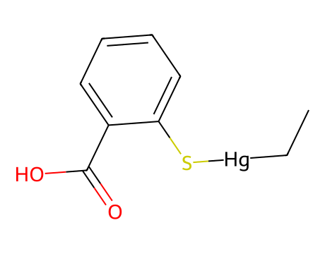
Thiomersalà dessiner
pas de nom commercial au cours
Dérivés mercuriels
Noyau : Acide thiosalicylique S-lié à un éthylmercure (–S–Hg–C2H5), sel de sodium
Mécanisme : Liaison aux groupes sulfhydryles des enzymes (inhibition enzymatique) (tableau p.175).
Indications : Agent conservateur dans les collyres (p.172), Conservateur dans certaines préparations ophtalmiques et vaccins ; antiseptique aujourd'hui peu utilisé (p.175)
Structure-activité
Benzoate (COO⁻ Na⁺) avec en ortho –S–Hg–CH2CH3 (SMILES donné sous forme acide) (p.172).
THIOmersal : THIOl (S) + MERcure ; conservateur des collyres.
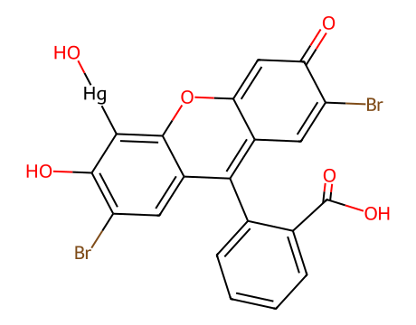
Merbromineà reconnaître
pas de nom commercial au cours
Dérivés mercuriels
Noyau : Fluorescéine dibromée (2 Br) portant un HgOH sur le cycle phénolique
Structure-activité
Préparation : condensation résorcine + anhydride phtalique (H2SO4) → fluorescéine, bromation (2 Br2), puis acétate mercurique (Hg(AcO)2) (p.172-173). Produit vert foncé à reflets irisés dont la solution est rouge. SMILES sous forme acide neutre.
Bromation plus poussée de la fluorescéine (dérivé tétrabromé) puis NaOH → éosine soluble (p.172-173). Produit orangé, soluble dans l'eau et l'alcool, insoluble dans les solvants organiques, incompatible avec les acides (p.173).
Dérivés de l'argent 1 molécule
structure non représentée
Argent colloïdalà reconnaître
pas de nom commercial au cours
Dérivés de l'argent
Noyau : Combinaisons d'Ag ou d'AgI avec des matières protéiques plus ou moins dégradées
Mécanisme : Libération d'ions Ag⁺ → interaction avec les protéines et l'ADN microbiens (tableau p.175).
Indications : Sels d'argent surtout en collyre et instillation nasale (p.174), Collargol en suppositoire (p.174), Antisepsie des plaies et brûlures, prévention des infections cutanées (p.175)
Structure-activité
Différentes combinaisons d'Ag ou d'AgI avec des protéines (p.174).
Ce que le prof a dit en cours
Retenir le concept des trois termes : stérilisation, désinfection, antisepsie (et antibiotique/antibactérien).
Alcool absolu vs alcool dénaturé : on ajoute un produit pour le rendre impropre à la consommation, pour des raisons fiscales.
Chlorhexidine, hexamidine : retenir le nom ; chloramine : retenir le nom.
Polyvidone iodée (ISOBETADINE®) : bleu souligné : le rôle de l'iode et pourquoi on utilise la polyvinylpyrrolidone (libération progressive, moins irritant).
Dérivés argentiques : déjà vus avec la sulfadiazine argentique (FLAMMAZINE®).
Désinfectant : tout micro-organisme (bactéries, virus, champignons, protozoaires) sur des surfaces inertes, parfois toxique pour la peau. Antiseptique de contact : sur la peau et les muqueuses. Un antiseptique peut servir de désinfectant, l'inverse n'est pas vrai.
Mécanismes surtout physico-chimiques (dissolution ou rupture des membranes, oxydation), pas une enzyme ou un récepteur : c'est pour ça que le spectre est large.
Éthanol : dissout les membranes ; alcool à 94° (absolu, taxé, ~10 €/100 mL) vs alcool dénaturé (additif, souvent de l'éther, impropre à la consommation, ~2 €/100 mL). Métabolisme : acétaldéhyde -> acide acétique -> acétyl-CoA (très calorique).
Formaldéhyde (formol) : surtout conservation des corps ; peu utilisé comme antiseptique.
Acide borique : eau boriquée 3,5 % (pH et osmolarité neutres, lavage des yeux) ; acide borique en paillettes (pieds, transpiration) ; BORADRINE®, BOROSTYROL®.
Eau oxygénée (H2O2) : oxydant ; perhydrol = 30 % = 100 volumes (dangereux, ne pas secouer) ; antiseptique 3 % = 10 volumes ; lentilles ~1 % puis neutralisation par la catalase ; décoloration (« blond peroxydé ») ; peroxyde d'urée (carbamide) pour blanchir les dents (fragilise l'émail).
Polyvidone iodée (ISOBETADINE®) : iode stabilisé par la PVP, oxydoréduction.
Hypochlorite (eau de Javel, DAKIN COOPER®) : surtout désinfectant des sols. Chloramine T (CLONAZONE®, retenir le nom) : comprimés pour rendre l'eau potable en trekking.
Chlorhexidine (HIBISCRUB®, HIBIDIL®) et hexamidine (HEXOMEDINE®, COLLUDOL®) : retenir les noms ; tensioactifs, bains de bouche, peau.
Chloroxylénol (DETTOL®) : xylène + Cl + OH ; très utilisé pendant le COVID.
Chlorure de benzalkonium (CEDIUM®) : ammonium quaternaire tensioactif (un savon) ; plaies sans douleur ; conservateur des collyres et de vaccins. Nonoxinol-9 : tensioactif spermicide (moins efficace que préservatifs/hormones).
Thiomersal : dérivé mercuriel organique, conservateur de certains vaccins (argument antivax : doses infimes, mercure organique). Merbromine (mercurochrome) puis éosine (aqueuse ou alcoolique).
Les questions posées par le prof
Relevées dans tes enregistrements du cours (et ta base Notion « Questions d'Examen »). Le prof : « vous pourrez avoir toutes mes questions d'examen, je vais vous les donner au fur et à mesure ». Les questions marquées « reformulée » reprennent un point que le prof a expliqué en détail ce jour-là, transformé en question. Réponds d'abord sur papier, puis ouvre la réponse pour te corriger.
18/09/2025Parlez-moi de la polyvidone iodée : pourquoi l'iode, pourquoi la polyvinylpyrrolidone ? Voir la réponse
L'iode est un oxydant à large spectre (bactéries, virus, champignons, spores). Complexé à la polyvinylpyrrolidone, il est libéré progressivement : moins irritant, moins colorant, action prolongée (ISOBETADINE®).
23/10/2025Pourquoi l'alcool dénaturé n'a-t-il pas la même utilisation que l'éthanol ? Voir la réponse
L'alcool dénaturé contient un additif (souvent un dérivé éthéré) qui le rend impropre à la consommation : il échappe à la fiscalité des boissons alcoolisées et sert à l'usage externe ; l'éthanol pur (alcool à 94-96°) est taxé.
23/10/2025 · reformuléeQuelle différence entre un désinfectant et un antiseptique de contact ? Voir la réponse
Le désinfectant agit sur tous les micro-organismes présents sur des surfaces inertes (sols, matériel) et peut être toxique pour la peau ; l'antiseptique s'applique sur les tissus vivants (peau, muqueuses). Un antiseptique peut désinfecter une surface, mais un désinfectant n'est pas forcément utilisable sur la peau. Les deux agissent surtout par des mécanismes physico-chimiques (membranes, oxydation).
23/10/2025 · reformuléeEau oxygénée : que signifient 30 %, 100 volumes, 10 volumes ? Pourquoi neutraliser après la désinfection des lentilles ? Voir la réponse
Le perhydrol à 30 % libère 100 fois son volume d'oxygène (100 volumes) : dangereux, irritant, explosif si secoué. Dilué 10 fois : 3 % = 10 volumes (antiseptique). Pour les lentilles (~1 %), il faut ensuite neutraliser l'H2O2 résiduel (catalase -> eau + oxygène) pour ne pas brûler la cornée.
23/10/2025 · reformuléePourquoi utiliser le chlorure de benzalkonium pour désinfecter une plaie ? Autres usages ? Voir la réponse
Ammonium quaternaire tensioactif cationique (« un savon ») qui désorganise les membranes ; en solution aqueuse il ne provoque pas de douleur, contrairement à l'alcool (CEDIUM®). Aussi conservateur des collyres et de certains vaccins.
23/10/2025 · reformuléePourquoi le thiomersal est-il cité par les antivaccins et pourquoi n'est-ce pas un vrai risque ? Voir la réponse
C'est un dérivé mercuriel organique, antiseptique et conservateur présent dans certains vaccins (presque plus utilisé). Les quantités injectées sont infimes et sous forme organique, sans rapport avec une intoxication au mercure (alimentaire par ex.).
23/10/2025 · reformuléeÀ quoi servent les comprimés de chloramine T (CLONAZONE®) ? Voir la réponse
Chlore organique stabilisé : libèrent la chloramine dans l'eau et la désinfectent (bactéries, parasites, virus) ; non toxiques par voie orale : eau de boisson en trekking (ou petites piscines).
Fiche de révision au format de l'examen
Examen écrit, 1 h 30 — 10 pages dont 1 de brouillon. Entraîne-toi dans les conditions : réponds sur papier, puis ouvre le corrigé.
Partie 1 — Questions ouvertes (environ 2 pages chacune)
Question 1. Parlez-moi des désinfectants et antiseptiques de contact.
Le plan attendu (sous-questions)
Définitions
Alcools et aldéhydes
Oxydants
Halogènes iodés
Biguanides et ammoniums quaternaires
Autres
Corrigé détaillé
Définitions
Stérilisation : destruction de tous les micro-organismes (dispositifs médicaux). Désinfection : objets et surfaces inertes. Antisepsie : tissus vivants (peau, muqueuses).
QROC 1. Quel est l'intérêt de la polyvidone iodée par rapport à la teinture d'iode ?
Réponse
L'iode est complexé à la polyvinylpyrrolidone, qui le libère progressivement : même spectre large de l'iode (oxydant), mais moins irritant, moins colorant et action prolongée (ISOBETADINE®).
QROC 2. Pourquoi l'eau boriquée est-elle adaptée au lavage des yeux ?
Réponse
Solution d'acide borique à 3,5 % : pH et osmolarité proches de la neutralité, peu irritante, propriétés antiseptiques ; utilisée sur une compresse propre (aussi BORADRINE®, BOROSTYROL® en ophtalmologie).
Partie 3 — Tableau de molécules
Comme à l'examen : chaque ligne te donne un indice (structure, DCI ou nom commercial). Complète le reste sur papier ou dans les cases, puis corrige. Structure à dessiner seulement si la molécule est en bleu gras souligné.